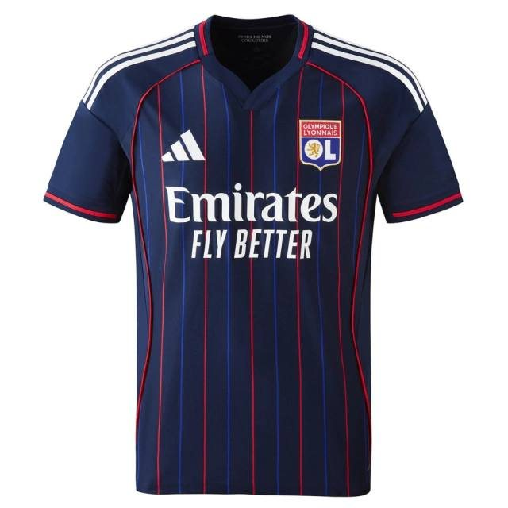

Camisas de clubes disponíveis agora
Estas são as peças de clubes já fotografadas e prontas para pedido. O catálogo completo tem 159 clubes — use o menu para filtrar por liga.



Ligue 1 · FrançaOlympique de Lyon
2º Uniforme · 26/27 · Masculino
Consultar no WhatsApp
Páginas por clube
- Camisa do Arsenal
- Camisa do Aston Villa
- Camisa do Bayern de Munique
- Camisa do FC Barcelona
- Camisa do Manchester City
- Camisa do Napoli
- Camisa do Olympique de Lyon
- Camisa do Paris Saint-Germain
- Camisa do Real Madrid
Preço
R$150 a peça avulsa, R$100 a partir de 3 e R$80 a partir de 5, podendo misturar times, tamanhos e tipos de peça.